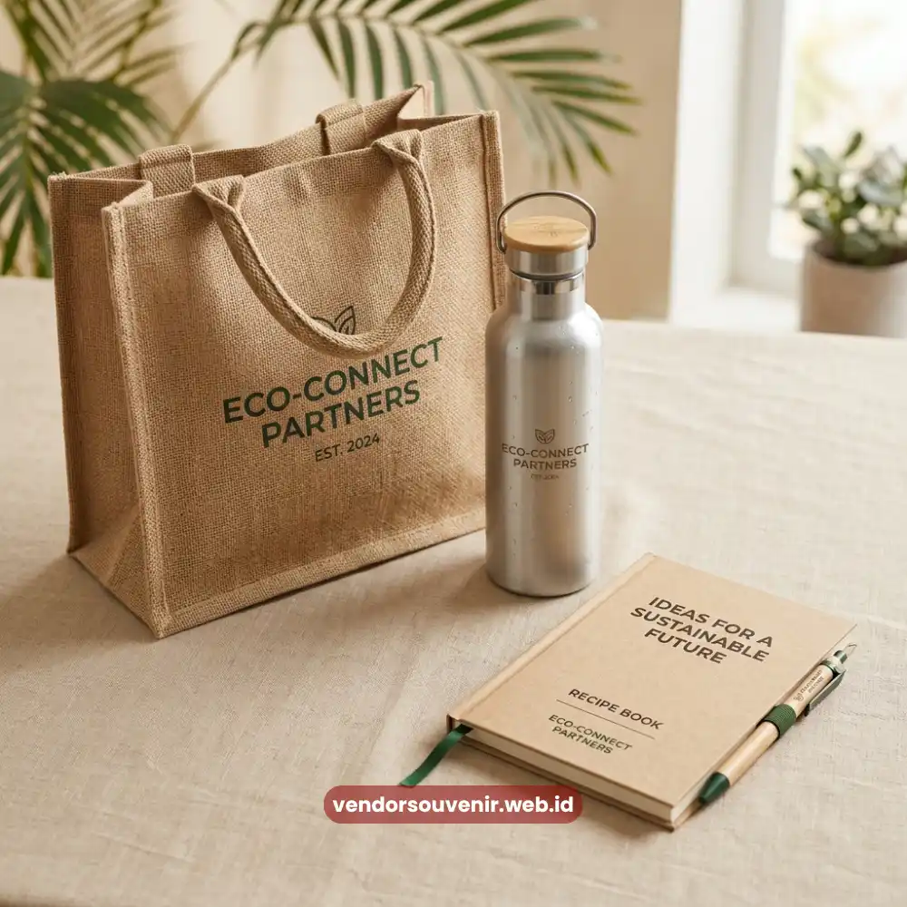
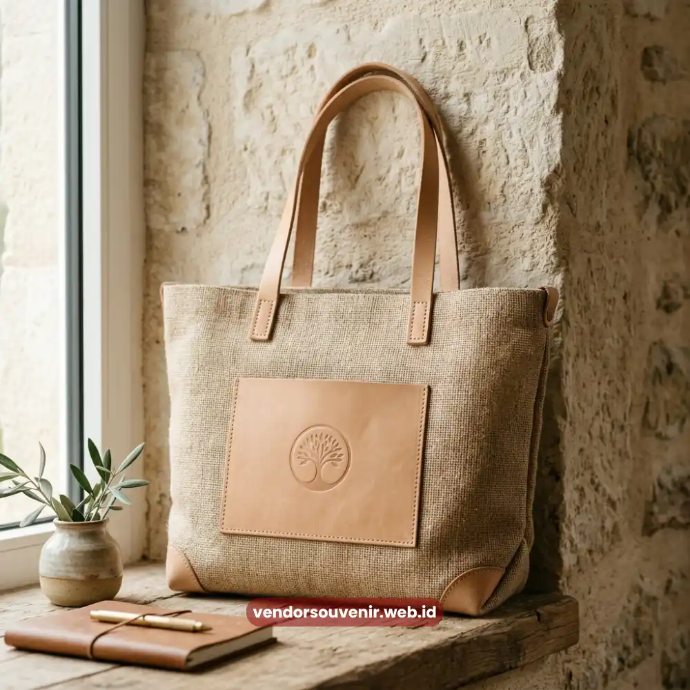

Daftar Isi
Paket ramah lingkungan yang efektif memakai material daur ulang seperti goni, kanvas organik, dan aluminium yang tetap fungsional sehari-hari, cocok untuk perusahaan di kawasan bisnis Denpasar yang ingin merchandise mereka mencerminkan nilai keberlanjutan.
Material ramah lingkungan yang paling sering dipesan perusahaan di kawasan bisnis Denpasar.
Kombinasi paket yang cocok untuk kebutuhan korporat sehari-hari.
Cara personalisasi logo pada tas belacu goni dan botol aluminium.
Melayani pemesanan souvenir ramah lingkungan untuk perusahaan di Denpasar dengan pengiriman terjadwal.
Perusahaan yang berkantor di kawasan Renon maupun kawasan bisnis Sunset Road semakin banyak yang mencari merchandise dengan nilai keberlanjutan, sejalan dengan meningkatnya perhatian terhadap isu lingkungan di kalangan korporat maupun instansi pemerintahan yang berbasis di sekitar area tersebut.
Kombinasi Produk untuk Kebutuhan Korporat Sehari-hari
Kombinasi produk ramah lingkungan yang paling sering dipesan untuk kebutuhan korporat sehari-hari terdiri dari tas belacu goni, botol minum aluminium, dan notebook kertas daur ulang, yang dapat digunakan karyawan maupun diberikan kepada klien.
Tas belacu goni cocok digunakan sebagai tas kerja serba guna, sementara botol aluminium mendukung kebiasaan minum air yang lebih sehat di lingkungan kantor.
Notebook kertas daur ulang melengkapi paket sebagai item pendukung untuk kebutuhan mencatat, baik dalam rapat internal maupun pertemuan dengan mitra bisnis.

Ilustrasi Tas Goni Custom Logo untuk Perusahaan
Personalisasi Logo pada Tas Belacu Goni dan Botol Aluminium
Personalisasi logo pada tas belacu goni umumnya menggunakan teknik cetak atau bordir, sedangkan pada botol aluminium biasanya menggunakan cetak permanen atau grafir agar logo tetap terlihat jelas dalam pemakaian jangka panjang.
Pemilihan teknik personalisasi sebaiknya disesuaikan dengan material dan warna dasar produk.
Cetak water based ink lebih disarankan untuk menjaga konsistensi nilai ramah lingkungan pada keseluruhan produk, sekaligus menghasilkan tampilan logo yang tetap tajam meski dipakai berulang kali.
Solusi Merchandise untuk Perusahaan di Kawasan Sunset Road
Perusahaan yang berbasis di kawasan bisnis Sunset Road umumnya membutuhkan merchandise yang praktis dibawa untuk kebutuhan pertemuan klien maupun acara networking, sehingga kombinasi tas belacu dan botol aluminium menjadi pilihan yang relevan.
Kombinasi ini memudahkan tim procurement menyiapkan satu paket yang sekaligus fungsional dan membawa pesan keberlanjutan brand.
Pengadaan dalam jumlah menengah hingga besar juga dapat disesuaikan dengan jadwal acara perusahaan di kawasan tersebut.

Souvenir Premium untuk Korporat
Pesan Paket Merchandise Ramah Lingkungan Anda
Dukung program keberlanjutan perusahaan dengan corporate gift yang bermanfaat dan berkesan.
Lihat Katalog Lengkap & HargaRespon cepat via WhatsApp. Gratis konsultasi & mockup desain.
Maroon Souvenir
Partner Corporate Gift terpercaya di Indonesia. Berpengalaman melayani ratusan perusahaan sejak 2018.
Lihat Portofolio Kami